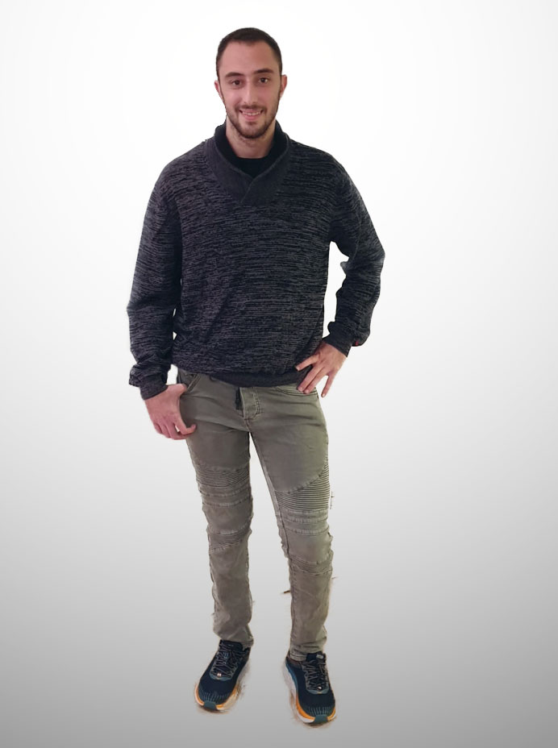
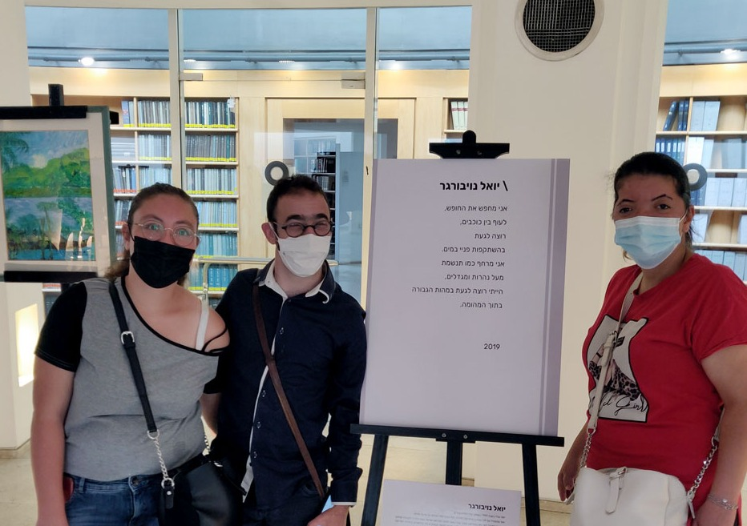
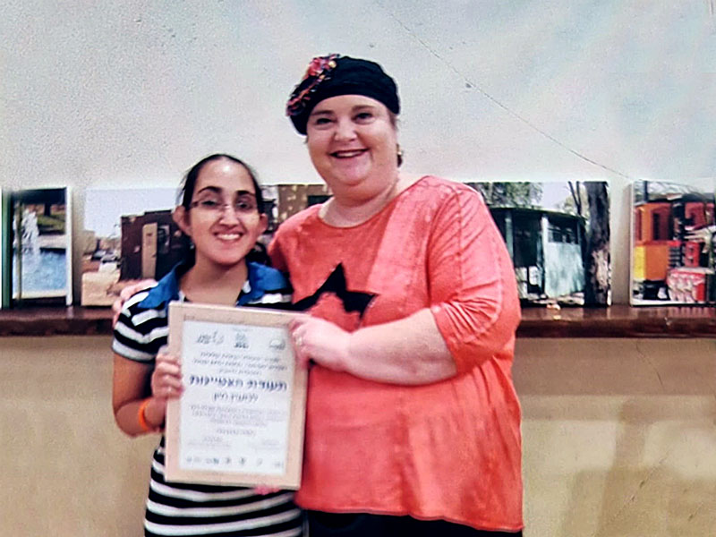

הדיירים והדיירות שלנו משרתים, עובדים, לומדים ויוצרים — הסיפורים שעושים לנו את היום

שירת בצבא בהתנדבות במשך 3 שנים בחיל השלישות. בשנה השלישית קיבל תעודת הצטיינות והערכה על איכות השירות והמוטיבציה בביצוע תפקידו. דורון עובד בחברת החשמל מזה 5 שנים במשרה מלאה — מגיע לעבודה בזמן ובקביעות, ממלא את המוטל עליו ומביע מוטיבציה להצליח ולהתקדם.
קרא/י עוד
בעל ידע עולם ותחומי התעניינות מגוונים — בעיקר באומנות, היסטוריה ותרבות. יואל כותב שירים והשתתף בתערוכה של אומנים עם צרכים מיוחדים שהוצגה בבית המשפט העליון. במסגרת עבודתו במוזיאון ישראל כעוזר מדריך בסדנת אומנות, נבחר להקריא שיר שכתב בנושא צבעים במלאת 30 יום לפטירתה של נחמה ריבלין ז"ל.
קרא/י עוד
שירתה בשירות לאומי בגן ילדים בקיבוץ נחשון ולאחר שנה נקלטה בדיור מודיעין. על המצוינות שגילתה בשירות הלאומי קיבלה תעודת הוקרה מנחמה ריבלין ז"ל. מעיין עובדת כ-3.5 שנים בתפקיד סייעת לגננת ולומדת זו השנה השלישית תואר ראשון בחינוך בלתי פורמלי במכללה האקדמית אונו בפרויקט "להיות סטודנט".
קרא/י עוד